R/plot_expression_similarity.R
plot_expression_similarity.RdCreates the expression-similarity line and box plots for each sample.
plot_expression_similarity( expression.summary, sample.names = NULL, similarity.name = "Pearson correlation", log.transform = TRUE, min.y = NULL, max.y = NULL, smooth.span = 0.1, only.boxplot = FALSE, binsize = 1, last.together = 0, show.counts = TRUE, add.threshold = NULL, file.name = NULL )
| expression.summary | list containing expression_levels and expression_levels_similarity matrices, as calculated by calculate_expression_similarity_*() |
|---|---|
| sample.names | names for the plots, defaults to the column names of the expression matrix |
| similarity.name | similarity metric used (for the y-axis title) |
| log.transform | should the count matrix be log-transformed? If not, boxplot is skipped |
| min.y, max.y | limits for the y axis. If unset default to symmetric including all values in expression.levels.similarity; min is set to 0 if there are no negative values |
| smooth.span | span to be used for smoothing in the line plot; defaults to 0.1 |
| only.boxplot | option to skip the line plot (usually a good idea if there are too many points and lines are too erratic); sets log.transform to TRUE |
| binsize | size of each bin in the boxplot; defaults to 0.5 |
| last.together | groups observations so the highest abundance bin has at least this many |
| show.counts | whether to show how many observations are in each bin |
| add.threshold | adds a horizontal line at this value |
| file.name | name of pdf to output the plots; if not provided (default), no printing is done |
A list of all the plots (returned silently)
plots <- plot_expression_similarity( expression.summary=list( "expression.levels" = matrix(2^(10*seq(0,1,length.out=100))), "expression.levels.similarity" = matrix(seq(0,1,length.out=100)+(runif(100)/5)))) plots[[1]]plots[[2]]